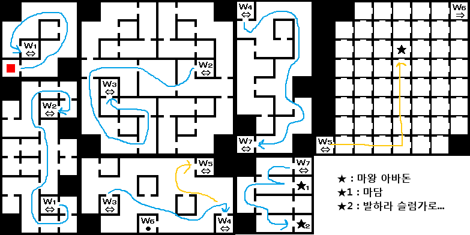
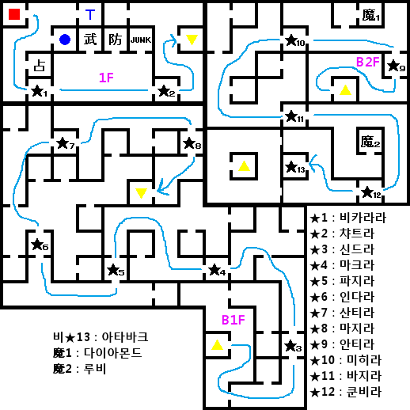
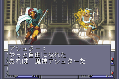
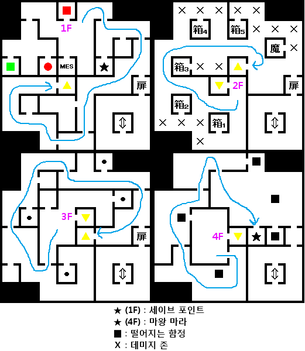
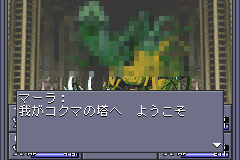
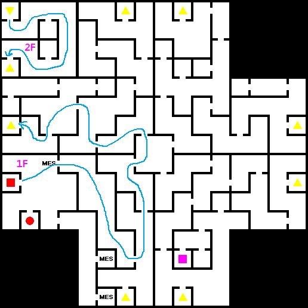
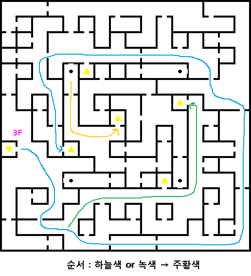
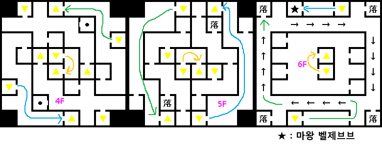
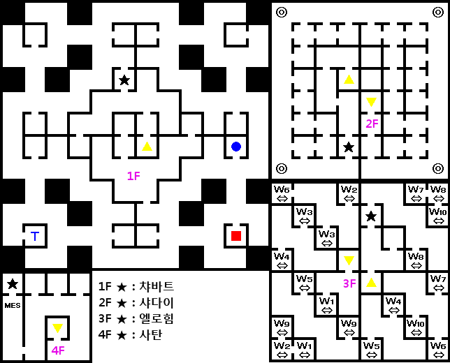
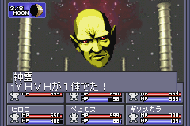

- 세트의 신전
- 아바돈 체내
- 베리아 회랑
- 케세드 불당
- 게브라 요새
- 아틸트 회랑
- 비나의 거리
- 사탄의 부활
- 코크마의 탑
- 케텔 성/입구
- 케텔 성
- 방주
- 방주의 보스
세트의 신전
티페레트 근처에 있는 세트의 신전에 간다.
세트가 날아가버린다. 이것으로 사탄이 부활한다는데...
아바돈 체내

아스타로트와 싸웠던 베리아 회랑에 가면 아바돈 체내로 이동할 수 있다.
내부에서 발하라의 마담과 만날 수 있다. 이 근처에는 발하라 슬럼가로 가는 입구가 있으니 들어가자. 슬럼가에 있는 가이아 신전 뒷방에서 메카다와 드디어 다시 만난다.
메카다는 알레프&히로코의 정체와 메시아 프로젝트에 대해 말해준다. 그리고 'MAG 프렛셔'를 준다.
다시 아바돈의 체내에 들어와 아바돈을 만나고 MAG 프렛셔로
BOSS:마왕 아바돈을 실체화 시키고 쓰러뜨린다.
이후 베리아 회랑이 정상으로 돌아온다.
베리아 회랑
다른 회랑과 마찬가지로 다른 지역과 연결되어 있다. 회랑 B2F을 기준으로 중앙의 계단은 티페레트 지역, 동쪽의 계단은 케세드 불당, 북서쪽의 계단은 게브라 요새이다.
먼저 케세드 불당으로 가자.
케세드 불당
케세드 불당에서는 전작에 나온 캐릭터들의 영혼을 볼 수 있다.
남서쪽 끝 방에서 베스의 영혼과 만날 수 있다. 베스는 마지막 힘을 사용해서 주인공의 모든 능력치를 +1 시켜준다.
베스가 있던 방 오른쪽에는 대일여래(大日如来)인
BOSS:마신 비로샤나가 있다.
비로샤나는 LAW, NEUTRAL 루트에서만 전투가 가능하다. 쓰러뜨리고 나서 베리아 회랑을 통해 게브라 요새로 이동한다.
게브라 요새

요새 내부에서 십이신장을 모두 쓰러뜨리는 것이 목적. 신장 모두 특별히 강하지는 않다. 떨어뜨리는 아이템으로 각종 보석을 준다.
B1F의
BOSS:신장 산티라는 검 공격을 반사한다.
B2F 마지막에 있는
BOSS:마신 아타바크를 쓰러뜨리면 아틸트 회랑의 문이 열린다.
아틸트 회랑
아틸트 회랑은 비나, 코크마, 게브라 3개의 지역에 연결된다. 세로로 긴 구조로 되어 있다.
비나 지역은 게브라~아틸트로 들어온 B1F 중앙을 기준으로 북쪽에 출구가 있다.
코크마는 게브라~아틸트로 들어온 B1F 중앙을 기준으로 남쪽의 계단을 통해 B2F로 가서 그 길을 따라 B1F로 내려와 출구로 나가면 된다.
먼저 비나에 가자.
비나의 거리
LAW 루트에서 비나의 거리에 들어가면 드루이드가 말을 걸어 온다. 「후리의 깃옷(フーリーの羽衣)」에 대해 알려준다는데 2만 마카를 요구한다. 그저 정보만 주기 때문에 거절해도 상관없다.
'후리의 깃옷'은 속성이 바뀌어 보이는 힘을 가지고 있다고 한다. 이 깃옷은 비나의 동쪽, 아틸트 회랑 북쪽 맵 끝에 ⌒ 처럼 파인 장소에서 목욕하고 있는 후리 몰래 입수할 수 있다.
잠시 후리? 는 무엇인가 궁금하신 분들을 위해 설명을 첨부.
인용 : 위키피디아
후리(Huris)는 이슬람교의 전승에 나오는 선녀들의 총칭. 이슬람의 천국에서 남자 신자의 섹스 상대를 한다. 무려 남자 1명으로 72명의 후리와 함께 한다고 한다. 그녀들은 영원히 처녀이며 처녀막이 다쳐도 곧바로 재생한다고 한다.
엄청난 설정(?)인...이슬람의 천국이었습니다.
다시 게임으로...

비나의 거리 중앙의 샘에
마왕 아스타로트를 중마로 데려가면 아스타로트의 분리 이벤트가 있다.
아스타로트의 요구에 응하면 아스타로트는 진정한 모습을 찾을 수 있었다며 고마워한다. 이제 '마신 아슈타'와 '지모신 이슈탈'을 악마 합체로 만들 수 있다.
사탄의 부활
LAW 루트를 제외한 루트는 에덴에 진입하기 위해서
후리의 깃옷이 필요하다.
에덴은 센터 22F을 통해 갈 수 있다. 센터 바(BAR)에 있는 사람으로부터 22F의 패스코드를 알 수 있다. 패스코드는 [3470]이다. 입력하는 위치는
센터 22F를 참조하자.
- LAW 루트 : 케루빔의 감시를 그냥 통과한다.
- NEUTRAL, CHAOS 루트 : '후리의 깃옷'이 없으면 케루빔의 감시를 통과할 수 없다.
에덴 안으로 들어가 남쪽 숲으로 가면 자인과 세트가 합체한다. 이로서 사탄이 부활! LAW 루트라면
대천사 사탄이 중마가 된다. 다른 루트면 주인공을 날려버린다.
이후 비나의 후리에게 후리의 깃옷을 돌려주면 주인공의 모든 능력치가 +1 된다.
아틸트 회랑을 통해 코크마의 탑으로 가자.
코크마의 탑


4F의
BOSS:마왕 마라와 만난다.
- LAW, NEUTRAL 루트 : 마라가 마카를 준다고 한다. YES를 선택하면 주인공이 마비에 걸려버린다. 거절하면 다음 질문에서도 YES를 선택하면 마비 상태에 걸리니 모두 거절하자.
- CHAOS 루트 : 지혜가 15 이상이면 마라와 싸울 수가 없다. 그냥 지나쳐버린다.
마라를 쓰러뜨리면 합체 제한이 풀려서 '마왕 마라'를 악마 합체로 만들 수 있게 된다.
이후 마라의 방에서 케텔 성으로 갈 수 있게 된다.
케텔 성/입구
- 성문을 열 수 있는 조건
- LAW 루트 : 중마에 대천사 사탄이 없으면 진입할 수 없다.
- NEUTRAL 루트 : 마사카도의 칼의 힘으로 문이 열린다.
- CHAOS 루트 : 통과
NEUTRAL 루트로 진행하면 마사카도의 칼이 「히히이로카네(ヒヒイロカネ)」로 바뀐다. 이것을 가지고 旧아카사카 1F 북쪽의 드워프 대장간을 찾아가서 맡긴 다음 월령이 10주 정도 지나면 「마사카도의 칼(将門の刀)」을 얻을 수 있다.
케텔 성



CHAOS 이외의 루트에서는 케텔 성 6F에서
BOSS:마왕 벨제브브와 싸울 수 있다. 벨제브브를 만나러 가는 것을 포함하면 1F~6F간을 3번이나 왕복해야 한다. 스토리와는 관련 없기에 필요 없다면 곧바로 루시퍼에게 가는 것도 좋다.
9F에서
BOSS:대마왕 루시퍼와 결전. (CHAOS 루트라면 루시퍼가 중마가 된다.)
루시퍼는 지금까지의 보스와 격을 달리하는 강함을 가지고 있다. HP도 8553으로 높으며 물리 공격력이나 마법 공격도 강력하다.
적 전체에 CHARM 상태로 만드는 사악한 빛(悪しき輝き)은 중마 전체가 걸려버리면 전투가 매우 힘들어진다. 주인공과 히로인에게 '신성방어'나 '반정신'이 상성을 가진 방어구를 필수로 장착해주자.
참고로 루시퍼가 중마가 되거나(CHAOS) 쓰러뜨린 후(LAW) 강제적으로 방주로 이동하게 된다. 한 번 방주에 진입하면 지상으로 돌아올 수 없으니 주의하기 바란다.
방주

- LAW 루트 : 곧 바로 YHVH를 만나러 가버리기 때문에 루시퍼와 싸움 이전에 미리 필요한 중마를 만들거나 아이템을 구입하고 나서 루시퍼를 만나길 바란다. 다른 루트와 달리 방주에서 사교의 관을 이용할 수 없기 때문에 새로운 전력을 보충할 수 없다. 거기다 4체의 신령들과 싸우는 것도 할 수 없다.
- CHAOS 루트 : 마찬가지로 방주에 이동하지만 고모리가 사교의 관이나 가이아 신전을 이용하게 해준다. 지상으로 이동은 불가능하다.
- NEUTRAL 루트 : 조금 다르게 지하세계의 용맥에서 구두룡과 전투가 있다. 지하세계에 가면 강제적으로 전투가 발생하니 일단 마계에서 필요한 준비는 모두 끝내고 지하세계에 가서 BOSS:사룡 구두룡과 전투하도록 하자. 쓰러뜨리고 터미널에 들어가면 STEVEN과 함께 방주에 이동한다. CHAOS와 비슷하게 STEVEN이 회복 시설과 사교의 관을 이용 가능하게 해준다.
LAW 루트는 곧 바로 4F 관제실에서부터 시작한다. 누군가의 목소리가 들려오며 부름에 응하면 곧 바로 YHVH가 있는 고차원 공간으로 이동한다.
다른 루트는 1F부터 시작한다. 목표는 4F 관제실이다. 신령을 격파하면서 올라가자. 마지막 사탄을 쓰러뜨리면 고차원 공간에 갈 수 있다.
방주의 보스
보스전 공략 방법은 언제나 그렇듯이
검 공격과 카쟈계 마법 조합이다.
방주의 모든 보스는 '전용 특기'를 가지고 있다. 효과적인 방어 방법은 대상 중마를 네크로마로 부활 시켜 놓으면 고기 방패가 되어준다.
파괴신 시바(72)의 천벌(天罰) 특기가 있다면 매우 쉬워진다. 천벌은 사용자와 다른 속성의 적에게 현재 HP 1/4의 데미지를 주는 특기로 CHAOS 속성의 시바가 신령들에게 아주 적격이다.
만일 LAW 루트라서 CHAOS 악마를 소환할 수 없다면 카지노에서 얻을 수 있는 리액트시트(リアクトシート)를 사용하면 소환 가능하다.
BOSS:신령 챠바트 HP3975
챠바트의 목소리(ツァバトの声) : 파티내에 가장 체력이 낮은 순서부터 PALYZE상태로 한다.
BOSS:신령 샤다이 HP4459
샤다이의 눈(シャダイの目) : 파티내에 가장 속도가 낮은 순서부터 PALYZE상태로 한다.
BOSS:신령 엘로힘 HP7492
엘로힘의 빛(エロヒムの光) : 파티내에 가장 운이 낮은 순서부터 STONE상태로 한다.
BOSS:신령 사탄 HP12500
신의 심판(神の裁き) : 파티내에 가장 마력이 낮은 순서부터 DEAD상태로 한다.
NEUTRAL, CHAOS 루트에서만 출현. 적일 때는 종족이 신령으로 나온다.
사탄은 월령 궁합에 의해 신월과 만월일 때 기본 공격력이 162.5%가 된다. 반달일 때는 50%로 낮아진다. 따라서 반달일 때 전투를 시작하자.
BOSS:신령 YHVH HP17079

갓 보이스(ゴッドボイス) : 파티내에 가장 지혜가 낮은 순서부터 DEAD상태로 한다. 대상 중마가 사망할 때 네크로마로 부활시켜주면 대응 가능하다.
회피력이 높아서 일반 중마로 공격을 맞추기도 어렵다. 스쿠카쟈를 사용할 것.
YHVH를 쓰러뜨리면 엔딩으로...